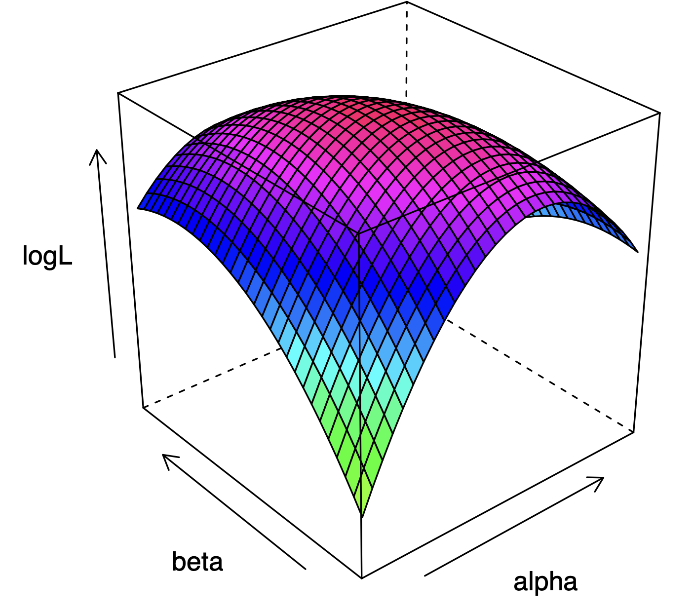

This lesson introduces and discusses a new estimator: the Maximum Likelihood Estimator. We first introduce the intuition of MLE, provide a simple example of MLE, and talk about how computers can use gradient descent algorithms to conduct MLE. Then, we discuss a few additional topics related to MLE and regressions.
This lesson covers the following topics:
- Introduces the intuition of maximum likelihood estimation, and what likelihood functions are.
- Discusses the estimation process of maximum likelihood, including how gradient descent algorithms are often used by computers.
- Discuss some statistics relating to likelihood functions, that can help us determine which models are better.
- Show how OLS is a special case of maximum likelihood estimation under certain circumstances.
2.6.1: Intuition of the Maximum Likelihood Estimator
In Part I, lessons 1.8, 1.9, and 1.10, we covered non-linear extensions to the linear model, including logistic, negative binomial, and poisson regression.
All of these models involve a link-function, which takes the linear model, and transforms it into a non-linear output.
Let us define any link functions as function G. Our models all take the form:
y = G(\beta_0 + \beta_1 x_1 + \dots + \beta_k x_k) + u
We could take the same estimation approach as OLS, and minimise the sum of squared errors:
\min\limits_b \sum\limits_{i=1}^n (y_i - \hat y)^2 = \min\limits_b \sum\limits_{i=1}^n (y_i - G(b_0 + b_1 x_1 + \dots + b_kx_k)^2
However, this estimate would not be efficient due to heteroscedasticity. This is because the assumption of constant variance is unrealistic in binary/categorical outcomes.
We can use an alternative estimator in this case: the Maximum Likelihood Estimator
- The maximum likelihood estimator can also be used on other models where there is no “error term” or algebraic way to solve for the solution.
But what is maximum likelihood estimation? The answer is it is kind of complex. We will first introduce the intuition behind the estimator, before delving into the mathematics of estimation.
The Maximum Likelihood Estimator, intuitively speaking, attempts to find the values of the parameters of the model which maximise the probability of the observed data under the fitted model.
In other words - every real parameter value \theta results in a probability of getting a certain data set.
- For example, in a linear regression, if the true population parameter \beta_1 = 1, then we would expect the relationship between x and y to conform to a line with a slope of 1. That is the most likely observed data we would get.
Maximum Likelihood attempts to find the value of \theta that gives the highest likelihood of observing our sample data. That value of \theta which maximise the likelihood is the estimate \hat\theta.
So the goal is to find the parameter values that maximise the likelihood of the data observed. But what is the likelihood of the data observed?
Let us be randomly sampling from a population of random variable y, with the population described by some probability density function f(y; \theta) (see 1.1.3)
- This probability density function is determined by some parameter \theta (for example, maybe mean, or variance, or multiple parameters), and the variable in question y.
- The probability density function outputs the likelihood of randomly selecting that specific y, given the parameter \theta.
Thus, the probability of selecting point y_1 in our data is f(y_1, \theta), the probability of selecting point y_2 in our data is f(y_2, \theta), and so on.
We know by the rules of probability, that the probability of two independent events is their independent probabilities multiplied. Thus, the probability of selecting points in our sample (y_1, \dots, y_n) is the probability of selecting each point multiplied:
f(y_1, \dots, y_n; \theta) = f(y_1; \theta) \times f(y_2; \theta) \times \dots \times f(y_n; \theta)
This is the likelihood of observing the y values in our data. Thus, our likelihood function L is defined as:
\begin{split} L(\theta; y_1, \dots, y_n) & = f(y_1; \theta) f(y_2; \theta) \dots f(y_n; \theta) \\ & = \prod\limits_{i=1}^nf(y_i; \theta) \end{split}
- Where the likelihood function L depends on our population parameter \theta, and the observed data y_1, \dots, y_n.
We want to find some \hat\theta that maximises this likelihood function:
\hat\theta = \max\limits_{\theta}L(\theta; y_1, \dots, y_n)
However, this is typically quite difficult. However, product notation is very difficult to work with in terms of calculus (which is how we typically optimise functions).
There is a solution to this problem - we can use the log-likelihood function, which is just the log of the likelihood function. This is because the value of \theta which maximises the log-likelihood function, also maximises the likelihood function:
\log L(\theta; y_i, \dots, y_n) = \log \prod_{i=1}^n f(y_i; \theta)
But why is the log-likelihood function useful - it still has product notation in it? Well actually, with properties of logarithms, we can convert the log of a product notation, into a summation notation (which is much easier to work with mathematically).
We can convert between the log of a product notation to the log of a summation notation as follows (because of the rules of logarithms):
\begin{split} \log \left( \prod\limits_{i=1}^n x_i\right) & = \log(x_1 \times x_2 \times \dots \times x_n) \\ & = \log(x_1) + \log(x_2) + \dots + \log(x_n) \\ & = \sum\limits_{i=1}^n\log (x_i) \end{split}
Thus, we can rewrite our log-likelihood function as following:
Log \ L(\theta; y_1, \dots, y_n) = \sum\limits_{i=1}^n f(y_i; \theta)
This is typically much more easier to optimise mathematically.
2.6.2: Simple Example of Maximum Likelihood Estimation
To illustrate maximum likelihood estimation, let us start with the simplest example of a logistic regression - a logistic regression with only one intercept term and no coefficients/explanatory variables.
\log \left( \frac{\pi_i}{1 - \pi_i} \right) = \beta_0
And thus (if you do not understand, see lesson 1.8 on logistic regression):
\pi_i = Pr(y_i = 1) = \frac{e^{\beta_0}}{1 + e^{\beta_0}} = \pi
- Since there is no explanatory variables, all units i will have the same probability \pi to be in category y = 1.
We have observations y_1, \dots, y_n from a Bernoulli distribution. The probability density function of a Bernoulli distribution is the following:
f(y; \theta) = Pr(y = 1) = \pi^y(1 - \pi)^{1-y}
- Where y can be either y=0 or y=1.
We know by the rules of probability, that the probability of two independent events is their independent probabilities multiplied. Thus, the probability of selecting points in our sample (y_1, \dots, y_n) is the probability of selecting each point multiplied:
f(y_1, \dots y_n| \pi) = f(y_1; \pi) \times \dots \times f(y_n; \pi) = \prod\limits_{i=1}^nf(y_i; \pi)
Thus, we can create our likelihood function L, which is the probability of the observed data, given some value of \pi:
\begin{split} L(\pi; y_i) & = \prod\limits_{i=1}^n f(y_i;\pi)\\ & = \prod\limits_{i=1}^n \pi^{y_i}(1- \pi)^{1 - y_i} \\ & = \pi^m (1-\pi)^{n-m} \end{split}
- Where m is the number of observations with y_i = 1, and n-m is the number of observations with y_i = 0.
Now, we want to find the value of \pi that will maximise our likelihood function. This will be easier with the log likelihood function:
\log L(\pi; y_i) = \sum\limits_{1=1}^n[y_i \log \pi + (1 - y_i \log (1 - \pi)]
To maximise this, we will simply use the first derivative, and set it equal to 0 (first order conditions):
\begin{split} \frac{\partial\log L(\pi; y_i)}{\partial \pi} & = \frac{\partial}{\partial \pi} \sum\limits_{1=1}^ n[y_i \log \pi + (1 - y_i) \log (1 - \pi)] \\ & = \sum\limits_{1=1}^ n \left( \frac{y_i}{\pi} - \frac{1 - y_i}{1 - \pi} \right) \end{split}
- If you are confused about this derivation, consult derivative properties in appendix A.
Now, set equal to 0 and solve for \pi:
\begin{split} 0 & = \sum\limits_{1=1}^ n \left( \frac{y_i}{\pi} - \frac{1 - y_i}{1 - \pi} \right) \\ 0 & = \frac{m}{\pi} - \frac{n-m}{1 - \pi} \\ \pi & = \frac{m}{n} \end{split}
Here, our estimate \hat\pi is just m/n, which makes sense:
- m is the number of observations with y_i = 1, and n is the total number of observations.
- \pi is the probability that an observation is y_i = 1.
- Thus, the probability of an observation being y_i = 1 should naturally be m/n.
2.6.3: Gradient Descent Methods of Estimation
We just covered a very simple version of maximum likelihood estimation, applied to a simple logistic model with no coefficients or explanatory variables.
However, what happens when we have a more complex model?
- The answer is it is generally very difficult, if not impossible, to solve by hand.
- Often, there isn’t even a mathematical closed-form solution that we can solve for.
Instead, we use a machine learning method called gradient descent to approximate the \theta that maximises the likelihood function.
Gradient Descent is an algorithmic way of optimsation, when mathematical solutions are not practical. The algorithm takes this form:
- We randomly choose a value of \theta to start, and calculate the likelihood L at that \theta.
- Then, we slightly go above our original \theta, and calculate the likelihood L. We also go slightly below our original \theta, and calculate the likelihood L.
- Now that we have tested both directions from our original \theta, choose the direction (above or below) that had the higher likelihood L increase.
- Once choosing the direction, shift in that direction to the new \theta value. Once again, look above and below this \theta value, and see moving in which direction increases L the most.
- Keep doing the same process of moving in the direction that raises L the most, looking around, determining which direction raises L more, and moving in that direction.
- Stop moving when you are at some point \theta where both directions decreases L. We are at the “top of the mountain”, the maximum.
You might note that this algorithm is not flawless - for example, what about local maximums?
- After all, a local maximum will also be a point where both sides decreases L. However, it will not be the global maximum that maximises L.
Luckily for us, this is not an issue with any type of logistic, poisson, or negative binomial model. This is because all these models are single-peaked with only a global maximum and no other extreme points at stationary points (see Appendix A for mathematical help).
The figure below shows the typical likelihood function of a logsitic regression with an intercept and one explanatory variable. Note how it is only single-peaked.

However, in some more advanced models, we will have this local maximum issue. There is a solution to this.
- We can essentially run many many different gradient descent estimates, starting at different points.
- The highest L maximum out of all of these gradient descents will be considered the global maximum.
- Theoretically, if we run enough gradient descents, we will find the global maximum for sure.
2.6.4: Properties of the Maximum Likelihood Estimate
The maximum likelihood estimator has a few very useful properties for us.
First, the maximum likelihood estimator is asymptotically consistent. That means under large sample sizes n \rightarrow ∞, the estimator will converge around the true parameter value:
\text{plim} \left( \hat\theta^{MLE} \right) = \theta
Second, the maximum likelihood estimator is asymptotically normal. That means under large sample sizes n \rightarrow ∞, the sampling distribution will be normally distributed.
- This allows us to conduct statistical inference and hypothesis tests.
Finally, the maximum likelihood estimator has the smallest asymptotic variance in the general class of estimators.
- It is more efficient that OLS in these discrete-choice models where homoscedasticity is present.
- Thus, it is the most asymptotically efficient estimator.
Thus, the Maximum Likelihood Estimator is an ideal estimator for the logistic, poisson, and negative binomial regressions.
Also, a final property of maximum likelihood estimation is that under the gauss-markov conditions, the maximum likelihood estimator is equivalent to the ordinary least squares estimator.
- We will explore this in section 2.6.7.
2.6.5: Likelihood Ratios
In regressions, we sometimes want to test more than one coefficient at a time.
- In linear regression, we use the F-test to do this. F-tests compare the R^2 of each model.
- In logistic, poisson, and negative binomial regression, we use the likelihood ratio tests (that we briefly went over in lesson 1.8).
However, we did not go into detail on what the likelihood ratio test is doing.
The intuition of testing multiple coefficients is the same between linear and non-linear regression models:
- We want to see if the alternative model with extra coefficients is a significantly better fit than the null model missing the extra coefficients.
In linear regression, R^2 is the natural choice of determining how well a model is fit.
- R^2 is after all, the amount of variation in y explained by the explanatory variables.
- Thus, the F-test compares R^2 values between two models, and sees if there is a statistically significant improvement in R^2 in the alternative model.
However, in logistic (and other non-linear regressions), the R^2 idea does not really make sense.
- The variation in y isn’t a very useful idea when y is binary and comes from a Bernoulli distribution.
Thus, we need an alternative way to measure the fit of a model. Well, we already know a great way to determine the fit - the likelihood function. After all, the likelihood function is how likely we are to observe the data we have, given our parameters and our model.
Larger values of likelihood indicate our model better explains y. Thus, we can use the likelihood function outputs as an indication of fit, just like we did R^2 in linear regression.
More specifically, we want to consider the difference between two model’s likelihoods. This is the likelihood ratio test statistic L^2:
L^2 = 2\log \left( \frac{L_1}{L_0}\right) = 2 \log (L_2) - 2 \log (L_1)
- Where L_1 is the likelihood of the alternative hypothesis, and L_0 is the likelihood of the null model.
- The final part of the equation is derived due to logarithmic rules.
Once we have our test statistic L^2, we consult a \chi^2 distribution, with degrees of freedom equal to the number of extra coefficients in the alternative hypothesis.
- A small p-value means that our alternative model with more coefficients is statistically significantly better fit than the null model.
- A large p-value means we cannot reject that the null hypothesis is just as good as our bigger model with more coefficients.
2.6.6: Information Criteria Statistics
We have talked about using the likelihood ratio test in comparing different models.
However, there is an issue with the likelihood ratio test - it is a nested model test:
- The null model’s coefficients must also be included in the alternative model, just that the alternative model has a few extra coefficients.
But, what if we wanted to compare two models that had different coefficients, and that were not nested?
First, we have to decide what we want in a comparison of models.
- Obviously, we want a model that fits the data well (which in this case, means a high likelihood).
- But, we also do not want an overly complex model. Why? Well, say we have one model with 3 explanatory variables, and another with 20 explanatory variables, but both have the same likelihood. Which one is better? We would rather the more efficient model with 3 explanatory variables (not to mention, this will reduce our variance in our estimates).
So we want a statistic that balances the fit of the model, and the complexity of the model. These statistics are often called Information Criteria (IC) Statistics.
The most commonly used one is called Akaike’s Information Criterion.
Akaike’s Information Criterion (almost always called AIC) is an information criteria statistic that allows us to compare different models with different explanatory variables, and determine which model is better.
The formula for AIC of a model is as follows:
AIC = -2 \log L + 2k
- Where L is the likelihood of the model given by the likelihood function.
- Where k is the number of coefficients/parameters in the model.
The lower the AIC, the better the model is.
There are also other information criterion statistics, but they are not as commonly used as AIC.
2.6.7: OLS as a Maximum Likelihood Estimator
The Maximum Likelihood Estimator produces the same results as the OLS when a few properties are met:
- First, the error term u must be normally distributed, such that n \sim \mathcal N(0, \sigma^2).
- Second, that we assume homoscedasticity: Var(u|x) = \sigma^2.
Proof of OLS and MLE Equivalency
This proof’s content is advanced. You do not need to know this.
A normal distribution has the following probability density function (as discussed in 1.1.6):
f(y) = \frac{1}{\sqrt{2 \pi \sigma^2}}e^{\left( \frac{(x- \mu)^2}{2 -\sigma^2}\right)}
Assuming our error term is normally distributed, we know that the conditional probability density function of our linear model y = \beta_0 + \beta_1 x + u_i is as follows:
f(y_i|x_i;\beta_0, \beta_1, \sigma^2) = \frac{1}{\sqrt{2 \pi \sigma^2}} e^{ \left( -\frac{1}{2 \sigma^2}(y_i - \beta_0 - \beta_1 x_i)^2 \right)}
By the independence of y_1, \dots, y_n, the likelihood function is:
\begin{split} L & = \prod_{i=1}^nf(y_i|x_i; \beta_0, \beta_1, \sigma^2) \\ & = \frac{1}{\sqrt{2 \pi \sigma^2}} e^{ \left( -\frac{1}{2 \sigma^2}\sum_{i=1}^n(y_i - \beta_0 - \beta_1 x_i)^2 \right)} \end{split}
The log-likelihood function is thus:
\log L = -\frac{n}{2} \log (2 \pi) - \frac{n}{2} \log (\sigma^2) -\frac{1}{2 \sigma^2}\sum_{i=1}^n(y_i - \beta_0 - \beta_1 x_i)^2
We can maximise the log-likelihood function (and thus the likelihood function) by finding the first order conditions:
\begin{split} \frac{\partial \log L}{\partial\beta_0} : & \ -\frac{1}{\sigma^2} \sum\limits_{i=1}^n(y_i - \hat\beta_0 - \hat\beta_1 x_i) \times -1 =0 \\ \frac{\partial \log L}{\partial\beta_1} : & \ -\frac{1}{\sigma^2} \sum\limits_{i=1}^n(y_i - \hat\beta_0 - \hat\beta_1 x_i) \times -x_i =0 \\ \frac{\partial \log L}{\partial\sigma^2} : & \ -\frac{n}{2\sigma^2} + \frac{1}{2\sigma^4} \sum\limits_{i=1}^n(y_i - \hat\beta_0 - \hat\beta_1 x_i) =0 \\ \end{split}
We can focus on the first two conditions, since we are interested in the intercept \beta_0 and coefficient \beta_1 estimates. We can ignore the initial \frac{1}{\sigma^2}, since if the summation equals zero, the whole partial derivative will also equal zero.
Thus, our first order conditions for maximum likelihood estimation are:
\begin{split} & \sum\limits_{i=1}^n(y_i - \hat\beta_0 - \hat\beta_1 x_i) = 0 \\ & \sum\limits_{i=1}^n(y_i - \hat\beta_0 - \hat\beta_1 x_i)x_i = 0 \end{split}
These conditions are identical to our OLS conditions. Thus, the maximum likelihood estimator is equivalent to OLS given normality of the error term and homoscedasticity.